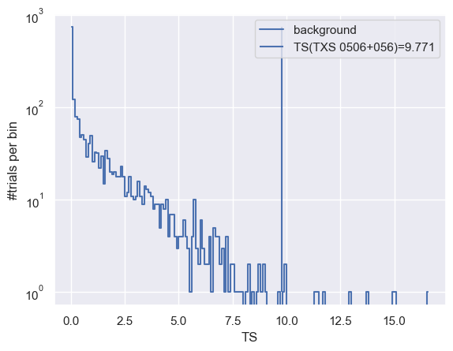
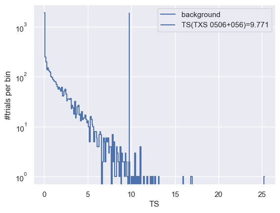
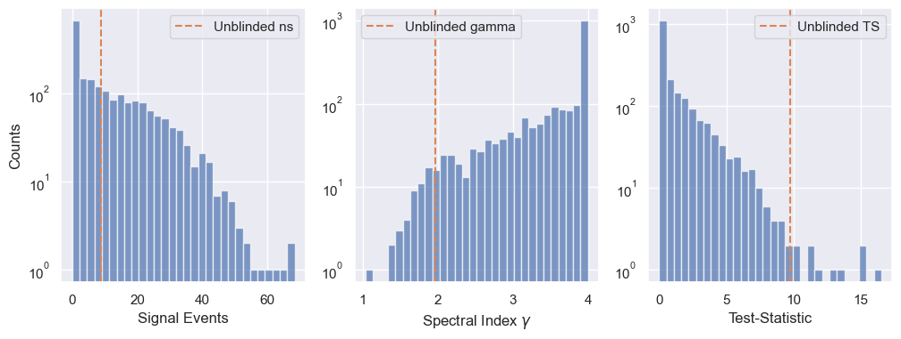
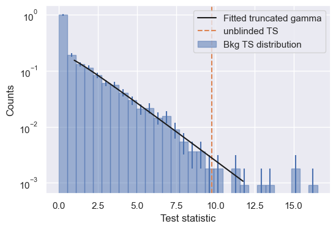

Illustrating different approaches to computing the significance (local p-value) using SkyLLH.
This tutorial shows how to calculate the significance (local p-value) using in SkyLLH.
[46]:
import numpy as np
from matplotlib import pyplot as plt
import scipy.stats
import sys
sys.path.append("/Users/amithan/skyllh_14/skyllh")
For a more details on the create_dataset_collection, PointLikeSource, create_analysis, initialize_trial and unblind functions see ‘here the url for the 14 year tutorial’.
First we have to create a configuration instance.
[3]:
from skyllh.core.config import Config
cfg = Config()
Importing dataset definition of the public 14-year point-source data set and we can get a list of data sets via the access operator [dataset1, dataset2, ...] of the dsc instance: For more details on the create_dataset_collection function see ‘url’
[4]:
from skyllh.datasets.i3.PublicData_14y_ps import create_dataset_collection
dsc = create_dataset_collection(
cfg=cfg,
base_path='/Users/amithan/Downloads/',
sub_path_fmt='PublicData_14y')
print(dsc.dataset_names)
datasets = dsc['IC40', 'IC59', 'IC79', 'IC86_I-XI']
['IC40', 'IC59', 'IC79', 'IC86_I', 'IC86_I-XI', 'IC86_II', 'IC86_III', 'IC86_IV', 'IC86_IX', 'IC86_V', 'IC86_VI', 'IC86_VII', 'IC86_VIII', 'IC86_X', 'IC86_XI']
Defining the Source: Here we use TXS 0506+056 as the source
Once the source is defined the create_analysis function can create the analysis instance
[5]:
from skyllh.core.source_model import PointLikeSource
from skyllh.analyses.i3.publicdata_ps.time_integrated_ps import create_analysis
src_ra = 77.35 # degrees
src_dec = 5.7 # degrees
source = PointLikeSource(
ra=np.radians(src_ra),
dec=np.radians(src_dec)
)
ana = create_analysis(
cfg=cfg,
datasets=datasets,
source=source
)
100%|██████████| 33/33 [00:25<00:00, 1.27it/s]
100%|██████████| 33/33 [00:35<00:00, 1.09s/it]
100%|██████████| 33/33 [00:25<00:00, 1.29it/s]
100%|██████████| 33/33 [00:08<00:00, 3.92it/s]
100%|██████████| 4/4 [08:22<00:00, 125.69s/it]
100%|██████████| 136/136 [00:00<00:00, 1876.73it/s]
Initializing the analysis instance and unbliding the data.
[6]:
from skyllh.core.random import RandomStateService
rss = RandomStateService(3090)
TS, bestfit_params, minimizer_status = ana.unblind(rss)
ns_bf = bestfit_params['ns']
gamma_bf = bestfit_params['gamma']
print(f"Unblinded results: TS={TS:.2f}, ns={ns_bf:.2f}, gamma={gamma_bf:.2f}")
print(f"Minimizer status: {minimizer_status}")
Unblinded results: TS=9.77, ns=8.80, gamma=1.97
Minimizer status: {'grad': array([-3.67243376e-06, 5.62921408e-05]), 'task': 'CONVERGENCE: REL_REDUCTION_OF_F_<=_FACTR*EPSMCH', 'funcalls': 16, 'nit': 11, 'warnflag': 0, 'skyllh_minimizer_n_reps': 0, 'n_llhratio_func_calls': 16}
Calculating the significance (local p-value) by generating the test-statistic distribution of background-only data trials.
The significance of the source, i.e. the local p-value, can be calculated by generating the test-statistic distribution of background-only data trials, i.e. for zero injected signal events. SkyLLH provides the helper function create_trial_data_file to do that:
[7]:
from skyllh.core.utils.analysis import create_trial_data_file
[51]:
help(create_trial_data_file)
Help on function create_trial_data_file in module skyllh.core.utils.analysis:
create_trial_data_file(ana, rss, n_trials, mean_n_sig=0, mean_n_sig_null=0, mean_n_bkg_list=None, minimizer_rss=None, bkg_kwargs=None, sig_kwargs=None, pathfilename=None, ncpu=None, ppbar=None, tl=None)
Creates and fills a trial data file with `n_trials` generated trials for
each mean number of injected signal events specified by `mean_n_sig` for a
given analysis.
Parameters
----------
ana : instance of Analysis
The Analysis instance to use for the trial generation.
rss : instance of RandomStateService
The RandomStateService instance to use for generating random
numbers.
n_trials : int
The number of trials to perform for each hypothesis test.
mean_n_sig : ndarray of float | float | 2- or 3-element sequence of float
The array of mean number of injected signal events (MNOISEs) for which
to generate trials. If this argument is not a ndarray, an array of
MNOISEs is generated based on this argument.
If a single float is given, only this given MNOISEs are injected.
If a 2-element sequence of floats is given, it specifies the range of
MNOISEs with a step size of one.
If a 3-element sequence of floats is given, it specifies the range plus
the step size of the MNOISEs.
mean_n_sig_null : ndarray of float | float | 2- or 3-element sequence of float
The array of the fixed mean number of signal events (FMNOSEs) for the
null-hypothesis for which to generate trials. If this argument is not a
ndarray, an array of FMNOSEs is generated based on this argument.
If a single float is given, only this given FMNOSEs are used.
If a 2-element sequence of floats is given, it specifies the range of
FMNOSEs with a step size of one.
If a 3-element sequence of floats is given, it specifies the range plus
the step size of the FMNOSEs.
mean_n_bkg_list : list of float | None
The mean number of background events that should be generated for
each dataset. This parameter is passed to the ``do_trials`` method of
the ``Analysis`` class. If set to None (the default), the background
generation method needs to obtain this number itself.
minimizer_rss : instance of RandomStateService | None
The instance of RandomStateService to use for generating random
numbers for the minimizer, e.g. new initial fit parameter values.
If set to ``None``, a rss with the same seed as ``rss`` will be
initialized.
bkg_kwargs : dict | None
Additional keyword arguments for the `generate_events` method of the
background generation method class. An usual keyword argument is
`poisson`.
sig_kwargs : dict | None
Additional keyword arguments for the `generate_signal_events` method
of the `SignalGenerator` class. An usual keyword argument is
`poisson`.
pathfilename : string | None
Trial data file path including the filename.
If set to None generated trials won't be saved.
ncpu : int | None
The number of CPUs to use.
ppbar : instance of ProgressBar | None
The optional instance of the parent progress bar.
tl: instance of TimeLord | None
The instance of TimeLord that should be used to measure individual
tasks.
Returns
-------
seed : int
The seed used to generate the trials.
mean_n_sig : 1d ndarray
The array holding the mean number of signal events used to generate the
trials.
mean_n_sig_null : 1d ndarray
The array holding the fixed mean number of signal events for the
null-hypothesis used to generate the trials.
trial_data : structured numpy ndarray
The generated trial data.
[8]:
from skyllh.core.timing import TimeLord
tl = TimeLord()
[ ]:
rss = RandomStateService(seed=1)
(_, _, _, trials) = create_trial_data_file(
ana=ana,
rss=rss,
n_trials=1e3,
mean_n_sig=0,
pathfilename='txs_bkg_trails.npy',
ncpu=8,
tl=tl)
print(tl)
100%|██████████| 1001/1001 [29:07<00:00, 1.75s/it]
TimeLord: Executed tasks:
[Generating background events for dataset "IC40". ] 0.003 sec/iter (1000)
[Generating background events for dataset "IC59". ] 0.008 sec/iter (1000)
[Generating background events for dataset "IC79". ] 0.013 sec/iter (1000)
[Generating background events for dataset "IC86_I-XI".] 0.121 sec/iter (1000)
[Generating pseudo data. ] 0.137 sec/iter (1000)
[Initializing trial. ] 0.528 sec/iter (1000)
[Get sig probability densities and grads. ] 2.0e-05 sec/iter (90416)
[Get bkg probability densities and grads. ] 2.0e-05 sec/iter (90416)
[Calculate PDF ratios. ] 3.1e-04 sec/iter (90416)
[Calc pdfratio value Ri ] 0.003 sec/iter (45208)
[Calc logLambda and grads ] 8.0e-04 sec/iter (45208)
[Evaluate llh-ratio function. ] 0.019 sec/iter (11302)
[Minimize -llhratio function. ] 0.219 sec/iter (1000)
[Maximizing LLH ratio function. ] 0.219 sec/iter (1000)
[Calculating test statistic. ] 9.8e-05 sec/iter (1000)
After generating the background trials, we can histogram the test-statistic values and plot the TS distribution.
[47]:
(h, be) = np.histogram(trials['ts'], bins=np.arange(0, np.max(trials['ts'])+0.1, 0.1))
plt.plot(0.5*(be[:-1]+be[1:]), h, drawstyle='steps-mid', label='background')
plt.vlines(TS, 1, np.max(h), label=f'TS(TXS 0506+056)={TS:.3f}')
plt.yscale('log')
plt.xlabel('TS')
plt.ylabel('#trials per bin')
plt.legend()
pass

One can also use a helper function extend_trial_data_file to extend the trial data if the trial data generated is not enough to estimate the p-value reliably.
It is also possible to write these trials onto a file, by defining a file path in the function.
[49]:
from skyllh.core.utils.analysis import extend_trial_data_file
[50]:
help(extend_trial_data_file)
Help on function extend_trial_data_file in module skyllh.core.utils.analysis:
extend_trial_data_file(ana, rss, n_trials, trial_data, mean_n_sig=0, mean_n_sig_null=0, mean_n_bkg_list=None, bkg_kwargs=None, sig_kwargs=None, pathfilename=None, **kwargs)
Appends to the trial data file `n_trials` generated trials for each
mean number of injected signal events specified by `mean_n_sig` for a
given analysis.
Parameters
----------
ana : instance of Analysis
The Analysis instance to use for sensitivity estimation.
rss : instance of RandomStateService
The RandomStateService instance to use for generating random
numbers.
n_trials : int
The number of trials the trial data file needs to be extended by.
trial_data : structured numpy ndarray
The structured numpy ndarray holding the trials.
mean_n_sig : ndarray of float | float | 2- or 3-element sequence of float
The array of mean number of injected signal events (MNOISEs) for which
to generate trials. If this argument is not a ndarray, an array of
MNOISEs is generated based on this argument.
If a single float is given, only this given MNOISEs are injected.
If a 2-element sequence of floats is given, it specifies the range of
MNOISEs with a step size of one.
If a 3-element sequence of floats is given, it specifies the range plus
the step size of the MNOISEs.
mean_n_sig_null : ndarray of float | float | 2- or 3-element sequence of float
The array of the fixed mean number of signal events (FMNOSEs) for the
null-hypothesis for which to generate trials. If this argument is not a
ndarray, an array of FMNOSEs is generated based on this argument.
If a single float is given, only this given FMNOSEs are used.
If a 2-element sequence of floats is given, it specifies the range of
FMNOSEs with a step size of one.
If a 3-element sequence of floats is given, it specifies the range plus
the step size of the FMNOSEs.
bkg_kwargs : dict | None
Additional keyword arguments for the `generate_events` method of the
background generation method class. An usual keyword argument is
`poisson`.
sig_kwargs : dict | None
Additional keyword arguments for the `generate_signal_events` method
of the `SignalGenerator` class. An usual keyword argument is
`poisson`.
pathfilename : string | None
Trial data file path including the filename.
Additional keyword arguments
----------------------------
Additional keyword arguments are passed-on to the ``create_trial_data_file``
function.
Returns
-------
trial_data :
Trial data file extended by the required number of trials for each
mean number of injected signal events..
[ ]:
tl = TimeLord()
rss = RandomStateService(seed=2)
trials = extend_trial_data_file(
ana=ana,
rss=rss,
n_trials=4e3,
trial_data=trials,
pathfilename='txs_bkg_trails.npy',
ncpu=8,
tl=tl)
0%| | 0/1 [00:00<?, ?it/s]100%|██████████| 4001/4001 [19:38:59<00:00, 17.68s/it]
[17]:
print(tl)
TimeLord: Executed tasks:
[Generating background events for dataset "IC40". ] 0.002 sec/iter (4000)
[Generating background events for dataset "IC59". ] 0.007 sec/iter (4000)
[Generating background events for dataset "IC79". ] 0.010 sec/iter (4000)
[Generating background events for dataset "IC86_I-XI".] 0.103 sec/iter (4000)
[Generating pseudo data. ] 0.116 sec/iter (4000)
[Initializing trial. ] 0.377 sec/iter (4000)
[Get sig probability densities and grads. ] 1.4e-05 sec/iter (346512)
[Get bkg probability densities and grads. ] 1.3e-05 sec/iter (346512)
[Calculate PDF ratios. ] 2.4e-04 sec/iter (346512)
[Calc pdfratio value Ri ] 0.002 sec/iter (173256)
[Calc logLambda and grads ] 5.9e-04 sec/iter (173256)
[Evaluate llh-ratio function. ] 0.014 sec/iter (43314)
[Minimize -llhratio function. ] 0.159 sec/iter (4000)
[Maximizing LLH ratio function. ] 0.159 sec/iter (4000)
[Calculating test statistic. ] 6.5e-05 sec/iter (4000)
skyllh.core.utils.analysis has a function calculate_pval_from_trials that allows one to calculate the p_value form trials. The function takes the created trials and the critical TS value to give the computed p_value and the error on it.
[52]:
from skyllh.core.utils.analysis import calculate_pval_from_trials
[53]:
help(calculate_pval_from_trials)
Help on function calculate_pval_from_trials in module skyllh.core.utils.analysis:
calculate_pval_from_trials(ts_vals, ts_threshold, comp_operator='greater')
Calculates the percentage (p-value) of test-statistic trials that are
above the given test-statistic critical value.
In addition it calculates the standard deviation of the p-value assuming
binomial statistics.
Parameters
----------
ts_vals : (n_trials,)-shaped 1D ndarray of float
The ndarray holding the test-statistic values of the trials.
ts_threshold : float
The critical test-statistic value.
comp_operator: string, optional
The comparison operator for p-value calculation. It can be set to one of
the following options: 'greater' or 'greater_equal'.
Returns
-------
p, p_sigma: tuple(float, float)
[ ]:
trials_ts_dis = np.load('txs_bkg_trails.npy')
[84]:
p_val_from_trials, p_val_from_trials_sigma = calculate_pval_from_trials(trials_ts_dis['ts'], TS)
print(f'p_value calculated from trials: {p_val_from_trials:.3e}')
p_value calculated from trials: 4.400e-03
[83]:
(h, be) = np.histogram(trials_ts_dis['ts'], bins=np.arange(0, np.max(trials_ts_dis['ts'])+0.1, 0.1))
plt.plot(0.5*(be[:-1]+be[1:]), h, drawstyle='steps-mid', label='background')
plt.vlines(TS, 1, np.max(h), label=f'TS(TXS 0506+056)={TS:.3f}')
plt.yscale('log')
plt.xlabel('TS')
plt.ylabel('#trials per bin')
plt.legend()
pass

Calculating the significance (local p-value) by fitting a truncated gamma function.
To estimate the significance of the result, one can use the do_trials property of the Analysis instance. This function generates some pseudo-experiments which are background only hypothesis with no signal.
[ ]:
help(ana.do_trials)
Help on method do_trials in module skyllh.core.analysis:
do_trials(rss, n, ncpu=None, tl=None, ppbar=None, **kwargs) method of skyllh.core.analysis.SingleSourceMultiDatasetLLHRatioAnalysis instance
Executes the :meth:`do_trial` method ``n`` times with possible
multi-processing.
Parameters
----------
rss : instance of RandomStateService
The RandomStateService instance to use for generating random
numbers.
n : int
Number of trials to generate using the `do_trial` method.
ncpu : int | None
The number of CPUs to use, i.e. the number of subprocesses to
spawn. If set to None, the global setting will be used.
tl : instance of TimeLord | None
The optional instance of TimeLord that should be used to time
individual tasks.
ppbar : instance of ProgressBar | None
The possible parent ProgressBar instance.
**kwargs
Additional keyword arguments are passed to the :meth:`do_trial`
method. See the documentation of that method for allowed keyword
arguments.
Returns
-------
recarray : numpy record ndarray
The numpy record ndarray holding the result of all trials.
See the documentation of the
:py:meth:`~skyllh.core.analysis.Analysis.do_trial` method for the
list of data fields.
[23]:
trials = ana.do_trials(
rss=rss,
n=1000,
)
100%|██████████| 1000/1000 [29:03<00:00, 1.74s/it]
extend_trial_data_file is a helper function that allows one to add more trial data to better calculate the p-value. This helper function used here is seperate from the do_trials property of the analysis instance.
[24]:
from skyllh.core.utils.analysis import extend_trial_data_file
trials = extend_trial_data_file(
ana=ana,
rss=rss,
n_trials=1000,
trial_data=trials
)
0%| | 0/1 [00:00<?, ?it/s]100%|██████████| 1001/1001 [15:38<00:00, 1.07it/s]
We can have a look at the distributions of the trial results and compare it to the unblinded result.
[26]:
fig,ax = plt.subplots(1,3,figsize=(12,4))
ax[0].hist(trials['ns'], bins=30, color='C0', alpha=0.7)
ax[0].axvline(ns_bf, color='C1', linestyle='--', label='Unblinded ns')
ax[0].legend()
ax[0].set_yscale('log')
ax[0].set_ylabel(r'Counts')
ax[0].set_xlabel(r'Signal Events')
ax[1].hist(trials['gamma'], bins=30, color='C0', alpha=0.7)
ax[1].axvline(gamma_bf, color='C1', linestyle='--', label='Unblinded gamma')
ax[1].legend()
ax[1].set_yscale('log')
ax[1].set_xlabel(r'Spectral Index $\gamma$')
ax[2].hist(trials['ts'], bins=30, color='C0', alpha=0.7)
ax[2].axvline(TS, color='C1', linestyle='--', label='Unblinded TS')
ax[2].legend()
ax[2].set_yscale('log')
ax[2].set_xlabel('Test-Statistic')
0%| | 8/4001 [21:59:02<10972:45:58, 9892.80s/it]
[26]:
Text(0.5, 0, 'Test-Statistic')

Estimating the p-value for the result, via fitting the Test Statistic (TS) distribution with a truncated gamma function.
The fit_truncated_gamma function can be used to fit the truncated gamma function to the TS distribution.
The calucate_pval_from_trials_mixed function, allows us to estimate the p-value from the fit. This function can also be used to estimate the p-value for very high TS values.
[27]:
from skyllh.core.utils.analysis import (
calculate_pval_from_trials_mixed,
fit_truncated_gamma,
calculate_critical_ts_from_gamma,
)
from scipy.stats import gamma
[28]:
help(calculate_pval_from_trials_mixed)
Help on function calculate_pval_from_trials_mixed in module skyllh.core.utils.analysis:
calculate_pval_from_trials_mixed(ts_vals, ts_threshold, switch_at_ts=3.0, eta=None, n_max=500000, comp_operator='greater_equal')
Calculates the probability (p-value) of test-statistic exceeding
the given test-statistic threshold. This calculation relies on fitting
a gamma distribution to a list of ts values if ts_threshold is larger than
switch_at_ts. If ts_threshold is smaller then the pvalue will be taken
from the trials directly.
Parameters
----------
ts_vals : (n_trials,)-shaped 1D ndarray of float
The ndarray holding the test-statistic values of the trials.
ts_threshold : float
The critical test-statistic value.
switch_at_ts : float, optional
Test-statistic value below which p-value is computed from trials
directly. For thresholds greater than switch_at_ts the pvalue is
calculated using a gamma fit.
eta : float, optional
Test-statistic value at which the gamma function is truncated
from below. Default is None.
n_max : int, optional
The maximum number of trials that should be used during
fitting. Default = 500,000
comp_operator: string, optional
The comparison operator for p-value calculation. It can be set to one of
the following options: 'greater' or 'greater_equal'.
Returns
-------
p, p_sigma: tuple(float, float)
You need to truncate the distribution at some \(\eta > 0\) because the TS distribution is the sum of a delta peak at 0 and a continuous distribution for TS > 0.
[ ]:
eta = 1.0
pars, norm = fit_truncated_gamma(trials['ts'], eta=eta)
# Plot
fig,ax = plt.subplots(1,1,figsize=(6,4))
counts, bins = np.histogram(trials['ts'], bins=30, density=True)
ax.bar(0.5*(bins[1:]+ bins[:-1]), height=counts, width=bins[1:]-bins[:-1], edgecolor='C0',
color='C0', alpha=.5, label='Bkg TS distribution')
ax.errorbar(0.5*(bins[1:]+ bins[:-1]), counts, yerr=np.sqrt(counts/len(trials['ts'])/(bins[1:]-bins[:-1])),
fmt='', ls='', color='C0')
bins = bins[bins > eta]
bincenters = 0.5 * (bins[1:]+ bins[:-1])
bw = bins[1:]-bins[:-1]
ax.set_yscale('log')
vals = np.linspace(eta, TS+2, 100)
ax.plot(vals, norm*gamma.pdf(vals, a=pars[0], scale=pars[1]),
lw=1.5, color='k', zorder=5, label='Fitted truncated gamma')
ax.axvline(TS, color='C1', linestyle='--', label='unblinded TS')
ax.set_xlabel('Test statistic')
ax.set_ylabel('Counts')
ax.legend()
<matplotlib.legend.Legend at 0x12a5818b0>

calculate_critical_ts_from_gamma function calculates the TS you would need in your analysis to reach a given significance.
[32]:
critical_ts = calculate_critical_ts_from_gamma(
ts=trials['ts'],
h0_ts_quantile=1.3e-3, # this is ~ 3 sigma
eta=1.0
)
print(f"TS value for a 3 sigma detection: {critical_ts:.2f}")
critical_ts = calculate_critical_ts_from_gamma(
ts=trials['ts'],
h0_ts_quantile=2.9e-7, # this is ~ 5 sigma
eta=1.0
)
print(f"TS value for a 5 sigma detection: {critical_ts:.2f}")
TS value for a 3 sigma detection: 12.88
TS value for a 5 sigma detection: 30.21
Finally, here the significance fo the unblinded result can be obtained.
[42]:
pval, _ = calculate_pval_from_trials_mixed(
ts_vals=trials['ts'],
ts_threshold=TS,
eta=eta
)
print(f"Unblinded result p-value by fitting the truncated gamma function: {pval:.2e}")
Unblinded result p-value by fitting the truncated gamma function: 5.81e-03
[82]:
print(f'p-value from TS distribution: {p_val_from_trials:.2e}')
p-value from TS distribution: 4.40e-03
The p-value calculated usng both methods are compatible.
Note: The p-value computed from the trials was computed using only 1000 trials. This introduces an error in the calcuation that is not negligible. The function calculate_pval_from_trials also returns this error.
[85]:
print(f'The error in calculating p-value from trials: {p_val_from_trials_sigma:.2e}')
The error in calculating p-value from trials: 9.36e-04